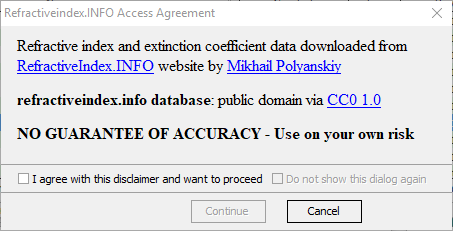
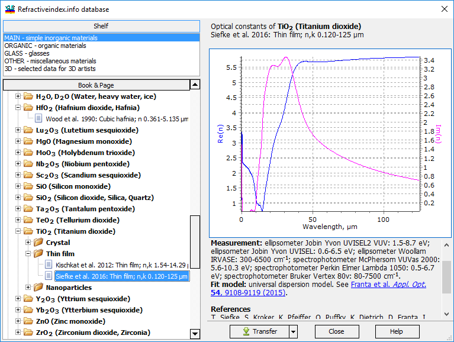
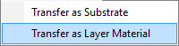

Refractiveindex.INFO Database
Refractiveindex.INFO Database
Before you begin using the database, it is important to review and accept the related terms of use. These terms outline the conditions and guidelines for using the database effectively and responsibly. Make sure to thoroughly read and understand the terms before proceeding with accessing and utilizing the database.

OptiLayer offers a user-friendly interface for navigating through the refractiveindex.infodatabase. The interface simplifies the process of accessing and using the information available in the database, making it easier for users to find the data they need efficiently.

In the left pane of the Refractiveindex.infodatabase window, you can select the Shelf section, and in the Book & Page section, you can choose a specific material of interest. The right pane displays detailed information related to the material, including refractive index dispersion and the initial source of the data. By using the Transfer button, you can move the data to the current Substrate database.
If you need to transfer the data to the Layer Material database, you can access a submenu by clicking the right arrow of the Transfer button. This submenu provides options for transferring the data to the appropriate database within OptiLayer.
